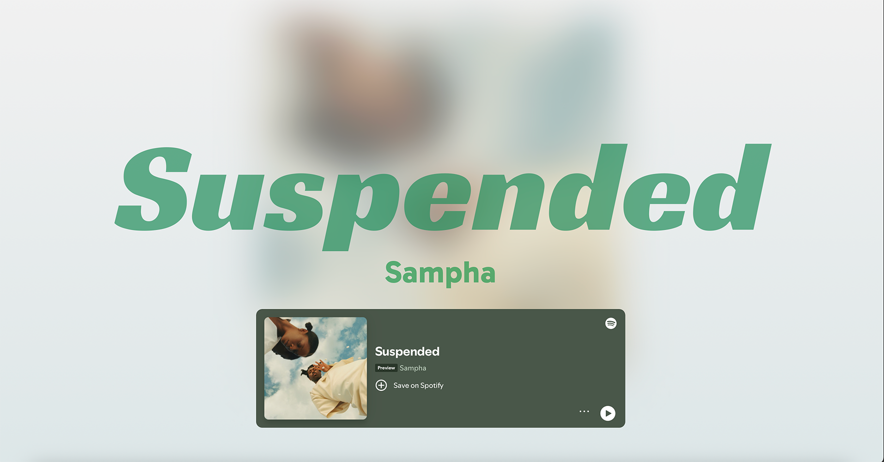
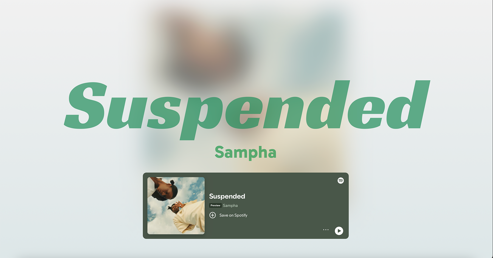
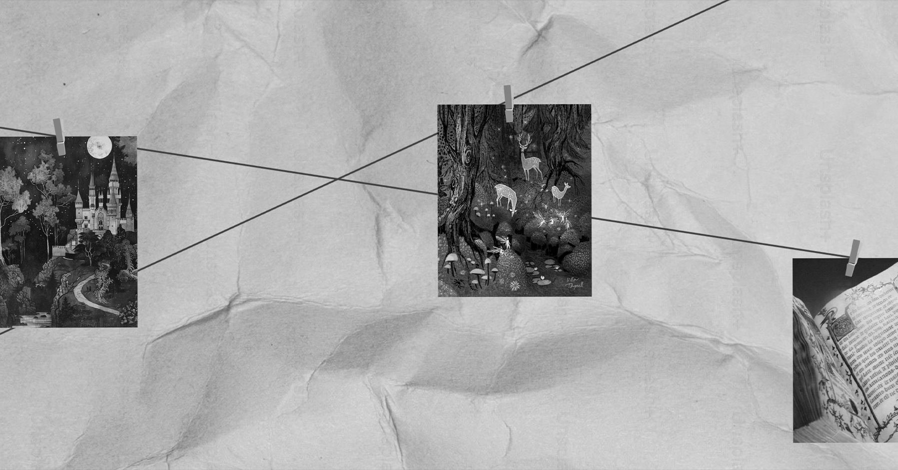

Interaction Foundations
 

Suspended — Lyrics
Designed lyric sheet for Sampha's Suspended.


Recipe Page
Designed a responsive recipe page for pound cake.


Grimm Microsite (Creative Director)
Directed visual tone and flow focusing on oral storytelling to fairytales.


The Art of Origami
Designed a microsite on the history of origami.